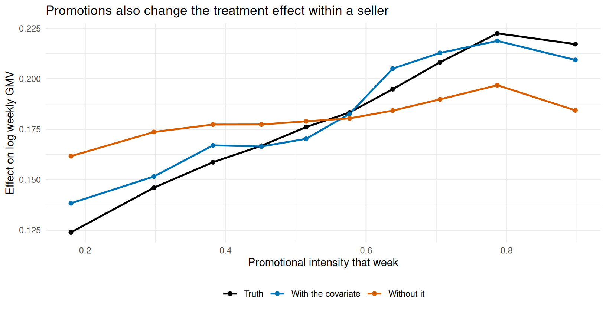

library(longbet)
library(dplyr)
library(tidyr)
library(tibble)
library(ggplot2)
library(purrr)
library(knitr)
source("R/longbet-common.R")
source("R/longbet-rollout.R")
source("R/longbet-artifacts.R")
verify_longbet_environment()
lb_engine_fingerprint <- get_longbet_engine_fingerprint()
lb_chapter_fingerprint <- digest::digest(file = knitr::current_input(), algo = "sha256")
lb_dependencies <- get_longbet_dependencies()
knitr::opts_chunk$set(cache.extra = list(lb_engine_fingerprint, lb_chapter_fingerprint,
lb_dependencies))
rollout <- simulate_longbet_rollout()
unpack_rollout(rollout)
lb_fit <- get_or_create_core_fit(rollout)
lb_att <- get_or_create_observed_att(lb_fit, rollout)27 LongBet: Forecasting, Observational Panels, and Diagnostics
NoteContinuation of the LongBet sequence
This chapter extends the foundational analysis in LongBet: Dynamic Treatment Effects in Staggered Rollouts and LongBet: Decisions and Multiple Outcomes. It reuses the marketplace rollout population, calendar, and core fitted model to explore long-horizon forecasting, observational identification, baseline modeling choices, time-varying moderators, and repeated-sampling operating characteristics.
27.1 Projecting Past the End of the Study
The study ends in calendar week 24. Weeks 25–30 were simulated but never shown to the model, so they provide a limited check on forecasting. We score only those future calendar cells below. Exposure time is a different axis: some later launch waves reach an exposure in the future that an earlier wave already reached during training.
LongBet projects the factor \(\beta_S\) when a prediction requires exposure times beyond those observed in training. The trees evaluate their existing partitions; they do not learn new splits or extrapolate a smooth trend outside their training ranges. Forecasts therefore depend on how the fitted model allocates the response between \(\beta\) and the treatment forest.
sig_knl is the kernel standard deviation and lambda_knl is its lengthscale. Changing them in predict() changes the conditional projection while retaining the fitted in-window draws. This is a sensitivity analysis that attaches different projection assumptions to one fit; it is not a refit under each alternative prior. With gp_constant_mean = TRUE, a marginalized constant mean contributes an uncertain common level inferred under the kernel. It is not necessarily the last observed factor value or a business steady state.
Reversion of the factor must be distinguished from reversion of the effect. Even if a zero-mean factor projection tends to zero, the contrast retains its control term, \(-b_0\beta_0\nu(X_i,0,t)\). A zero factor does not generally imply a zero treatment effect.
The grid reuses identical tree evaluations across its projection settings. cache_forest_evaluations = TRUE speeds up that repeated calculation by keeping three draw-by-cell arrays in memory, about 0.8 GiB at the main fit’s settings. This adds memory even with summary_only = TRUE; leave caching off when that space is unavailable. The cached and uncached calculations have the same target.
gp_grid <- expand_grid(sigma = c(0.3, 1.0), lambda = c(2, 5, 8, 12, 20))
forecast_s_obs <- t(apply(z_train, 1, cumsum))
forecast_s_ext <- t(apply(z_ext, 1, cumsum))
forecast_n_obs <- tabulate(forecast_s_obs[z_train == 1], nbins = S_max)
forecast_n_ext <- tabulate(forecast_s_ext[z_ext == 1], nbins = S_max)
forecast_n_future <- forecast_n_ext - forecast_n_obs
forecast_keep <- which(forecast_n_future > 0)
forecast_obs_draws <- matrix(0, S_max, ncol(lb_att$att_full))
forecast_obs_draws[seq_len(nrow(lb_att$att_full)), ] <- lb_att$att_full
forecast_truth_obs <- numeric(S_max)
forecast_truth_obs[seq_along(truth_att)] <- truth_att
forecast_truth <- (truth_att_ext * forecast_n_ext -
forecast_truth_obs * forecast_n_obs)[forecast_keep] /
forecast_n_future[forecast_keep]
# The full extended ATT is a weighted average of observed and future cells.
# Subtract observed sums draw by draw before computing future-cell intervals.
gp_future_draws <- vector("list", nrow(gp_grid))
gp_runs <- map_dfr(seq_len(nrow(gp_grid)), function(gp_j) {
gp_setting <- gp_grid[gp_j, ]
gp_pr <- predict(lb_fit, x = x, z = z_ext,
t = c(week_study, week_future),
sig_knl = gp_setting$sigma, lambda_knl = gp_setting$lambda,
summary_only = TRUE, cache_forest_evaluations = TRUE,
random_seed = 1)
gp_a <- get_att(gp_pr)
stopifnot(identical(dim(gp_a$att_full), dim(forecast_obs_draws)))
gp_future <- (gp_a$att_full * forecast_n_ext -
forecast_obs_draws * forecast_n_obs)[forecast_keep, , drop = FALSE] /
forecast_n_future[forecast_keep]
gp_future_draws[[gp_j]] <<- gp_future
gp_bounds <- t(apply(gp_future, 1, quantile, c(.025, .975)))
tibble(sigma = gp_setting$sigma, lambda = gp_setting$lambda,
s = forecast_keep, n_future = forecast_n_future[forecast_keep],
estimate = rowMeans(gp_future), lower = gp_bounds[, 1],
upper = gp_bounds[, 2], truth = forecast_truth)
})gp_forecast_checks <- lapply(seq_len(nrow(gp_grid)), function(gp_j)
diagnose_draws(gp_future_draws[[gp_j]], lb_fit,
paste("Future cells; sigma", gp_grid$sigma[gp_j], "lambda", gp_grid$lambda[gp_j])))
gp_forecast_diagnostics <- bind_rows(lapply(gp_forecast_checks, `[[`, "summary"))
gp_forecast_diagnostics %>% kable(digits = 3, caption = paste(
"Checks on every reported future-cell exposure summary under each projection.",
"They must be read alongside the training-fit checks: independent projection",
"noise can mask slow exploration of the training posterior."
))| label | rhat_max | ess_min | ess_tail_min | diagnostic_ok |
|---|---|---|---|---|
| Future cells; sigma 0.3 lambda 2 | 2.092 | 5.348 | 39.519 | FALSE |
| Future cells; sigma 0.3 lambda 5 | 1.851 | 5.855 | 51.445 | FALSE |
| Future cells; sigma 0.3 lambda 8 | 2.122 | 5.337 | 30.325 | FALSE |
| Future cells; sigma 0.3 lambda 12 | 2.436 | 4.961 | 27.516 | FALSE |
| Future cells; sigma 0.3 lambda 20 | 2.327 | 5.067 | 29.391 | FALSE |
| Future cells; sigma 1 lambda 2 | 1.413 | 9.067 | 27.539 | FALSE |
| Future cells; sigma 1 lambda 5 | 1.749 | 6.168 | 56.128 | FALSE |
| Future cells; sigma 1 lambda 8 | 2.070 | 5.418 | 30.181 | FALSE |
| Future cells; sigma 1 lambda 12 | 2.455 | 4.945 | 27.516 | FALSE |
| Future cells; sigma 1 lambda 20 | 2.266 | 5.133 | 33.976 | FALSE |
gp_runs %>%
group_by(sigma, lambda) %>%
summarise(RMSE = sqrt(mean((estimate - truth)^2)),
`Mean width` = mean(upper - lower),
`Contained truth` = sprintf("%d of %d",
sum(truth >= lower & truth <= upper), n()), .groups = "drop") %>%
kable(digits = 4, caption = paste(
"Effects averaged over treated cells in withheld calendar weeks 25--30,",
"grouped by exposure time. These are pointwise intervals on one dataset;",
"containment is not a repeated-sampling coverage estimate."
))| sigma | lambda | RMSE | Mean width | Contained truth |
|---|---|---|---|---|
| 0.3 | 2 | 0.0075 | 0.2005 | 9 of 9 |
| 0.3 | 5 | 0.1650 | 1.1382 | 9 of 9 |
| 0.3 | 8 | 0.2020 | 0.9104 | 9 of 9 |
| 0.3 | 12 | 0.0486 | 0.5357 | 9 of 9 |
| 0.3 | 20 | 0.0165 | 0.2375 | 9 of 9 |
| 1.0 | 2 | 0.0083 | 0.3089 | 9 of 9 |
| 1.0 | 5 | 0.1641 | 1.0740 | 9 of 9 |
| 1.0 | 8 | 0.1945 | 0.8687 | 9 of 9 |
| 1.0 | 12 | 0.0498 | 0.5457 | 9 of 9 |
| 1.0 | 20 | 0.0153 | 0.2217 | 9 of 9 |
gp_runs %>%
filter(sigma == 1, lambda %in% c(2, 8, 20)) %>%
mutate(setting = factor(paste0("lambda = ", lambda),
levels = paste0("lambda = ", c(2, 8, 20)))) %>%
ggplot(aes(s)) +
geom_ribbon(aes(ymin = lower, ymax = upper), fill = PAL[["LongBet"]], alpha = .18) +
geom_line(aes(y = estimate), colour = PAL[["LongBet"]], linewidth = .9) +
geom_line(aes(y = truth), colour = PAL[["Truth"]], linewidth = .8) +
facet_wrap(~setting) +
labs(x = "Exposure time among future cells", y = "Effect on log weekly GMV",
title = "Future calendar cells under three projection assumptions",
subtitle = "Kernel standard deviation = 1; each panel uses the same training fit") +
theme_minimal()
The comparison above is conditional on both the forecast summaries and the training fit passing their sampling checks in Section 25.7.1. An apparent forecast improvement cannot repair an inadequately explored training posterior. Newly simulated GP projection noise can make forecast draws look less autocorrelated without resolving a slow training chain, so forecast ESS alone would be a misleading certificate.
Inspect the sensitivity in both the interval widths and the errors against truth. A narrower band expresses a stronger assumption; it is not evidence that the assumption is correct. Six withheld weeks on one simulated dataset cannot validate the 38-week flat tail in the annual business scenario. Previous launches can provide separate training and validation windows for checking projection assumptions before applying them to a new decision.
NoteWhat disabling exposure splits changes
split_time_trt = FALSE hides exposure time from the treatment forest. At a fixed calendar time and fixed covariates, its contrast becomes \((b_1\beta_S-b_0\beta_0)\nu(X_i,t)\). Calendar time remains visible to that forest, so different units can still have different trajectories as the calendar moves. The option changes the model’s restrictions; it does not guarantee better forecasts. Comparing the options requires separately diagnosed fits.
27.2 What Happens Without the Randomization
Everything so far has leaned on the rollout being randomized, and Section 25.3 was careful about the division of labor: randomization supplies identification, the model supplies resolution. But LongBet was not built for randomized rollouts. It was built for observational panels, where the argument is that conditioning on \(X_i\) can stand in for parallel trends (Wang, Martinez, et al. 2024). The chapter has asserted that and never tested it. This section does, because the claim is easy to overread in both directions.
Keep the seller characteristics and effect curves, then generate two observational panels. Both draw fresh observation noise and lookback summaries. Their launch rules differ, and the second also adds an unobserved shock to the untreated path.
In the first, the marketplace rolls the optimizer out to its fastest-growing sellers first. Growth is visible: it is base_slope, the pre-period trend already sitting in x. This breaks parallel trends by construction, because treated sellers were climbing before they were treated.
In the second, the field team picks sellers on something the data never records — call it ambition. Ambitious sellers adopt earlier and also receive a larger persistent boost to untreated log GMV beginning in week 11. Nothing in the lookback window reveals that later level shift.
set.seed(8123)
u_i <- rnorm(n) # unrecorded, drives adoption and a later level shift
make_obs <- function(scenario) {
y0s <- matrix(level_i, n, Tn) + outer(drift_i, weeks_all, "*") +
season(matrix(vertical, n, Tn), tmat) +
matrix(rnorm(n * Tn, 0, 0.28), n, Tn)
if (scenario == "hidden") {
# ambition lifts the untreated path from week 11, after the lookback ends
y0s <- y0s + 0.15 * u_i * matrix(rep(weeks_all >= 11, each = n), n, Tn)
}
wb <- week_base - mean(week_base)
bl <- rowMeans(y0s[, week_base])
bs <- as.vector((y0s[, week_base] %*% wb) / sum(wb^2))
# Who goes first; the hidden scenario also changes y0s above.
score <- if (scenario == "observed")
1.5 * scale(bs)[, 1] + 0.6 * scale(log(listings))[, 1] + rnorm(n, 0, .5)
else
1.5 * u_i + rnorm(n, 0, .5)
# Same nominal allocation fractions: four waves of 15%, a 40% holdout.
q <- quantile(score, c(.40, .55, .70, .85))
wv <- ifelse(score >= q[4], "W1", ifelse(score >= q[3], "W2",
ifelse(score >= q[2], "W3", ifelse(score >= q[1], "W4", "Holdout"))))
lc <- LAUNCH[wv]
Sm <- tmat - matrix(lc, n, Tn) + 1
Sm[!is.finite(Sm) | Sm < 0] <- 0
Sm <- matrix(as.numeric(Sm), n, Tn)
Zm <- matrix(as.integer(Sm > 0), n, Tn)
tm <- ifelse(Sm > 0, w_i * h_grow(Sm) + (1 - w_i) * h_fade(Sm), 0)
vert_obs <- factor(vertical)
x_mat <- cbind(bl, bs, log(listings), fulfilled,
model.matrix(~ vert_obs - 1)[, -1])
colnames(x_mat) <- c("base_level", "base_slope", "log_listings",
"fulfilled", paste0("vertical_", levels(vert_obs)[-1]))
list(y = y0s + tm, z = Zm, S = Sm, tau = tm, wave = wv, x = x_mat)
}# Event-time truth and an unadjusted wave-versus-holdout DiD: each wave
# against the never-treated group, differenced from a common pre-window,
# pooled by sample size. There is no randomized-stratum reweighting here.
obs_truth <- function(d) vapply(seq_len(S_observed), function(s) {
m <- d$S[, week_study] == s
if (any(m)) mean(d$tau[, week_study][m]) else NA_real_
}, numeric(1))
obs_did <- function(d) {
pre <- 7:10
dY <- d$y - rowMeans(d$y[, pre]); colnames(dY) <- weeks_all
vapply(seq_len(S_observed), function(s) {
ws <- c("W1", "W2", "W3", "W4")
ws <- ws[LAUNCH[ws] + s - 1 <= max(week_study)]
nt <- vapply(ws, function(w) sum(d$wave == w), integer(1))
ws <- ws[nt > 1]; nt <- nt[nt > 1]; a <- nt / sum(nt)
col <- match(as.integer(LAUNCH[ws] + s - 1), weeks_all)
tm <- vapply(seq_along(ws), function(j)
mean(dY[d$wave == ws[j], col[j]]), numeric(1))
sum(a * tm) - mean(as.vector(dY[d$wave == "Holdout", col, drop = FALSE] %*% a))
}, numeric(1))
}
obs_longbet <- function(d) {
f <- longbet(y = d$y[, week_study], x = d$x,
z = d$z[, week_study], t = week_study,
num_sweeps = 250, num_burnin = 2000, n_skip = 2, num_chains = 4,
sigma_prior_a = 2, sigma_prior_b = 1,
num_trees_pr = 20, num_trees_trt = 20,
sig_knl = 1, lambda_knl = 2, random_intercept = TRUE,
random_seed = 1, verbose = FALSE)
a <- get_att(predict(f, x = d$x, z = d$z[, week_study],
t = week_study, summary_only = TRUE, random_seed = 1))
obs_targets <- rbind(a$att_full, `Mean across exposures` = colMeans(a$att_full))
result <- list(att = a$att[seq_len(S_observed)],
diagnostics = diagnose_draws(obs_targets, f, "Observational ATT"))
rm(f); gc(verbose = FALSE)
result
}
obs_run_details <- list()
obs_res <- map_dfr(c("observed", "hidden"), function(sc) {
d <- make_obs(sc); tr <- obs_truth(d)
# Run each estimator once and reuse the errors: obs_longbet() refits the
# model, so calling it again for the RMSE doubles this section's cost for
# output that is identical by construction.
did_err <- obs_did(d) - tr
lb_result <- obs_longbet(d)
obs_run_details[[sc]] <<- lb_result$diagnostics
lb_err <- lb_result$att - tr
tibble(scenario = sc,
did = mean(did_err), did_rmse = sqrt(mean(did_err^2)),
lb = mean(lb_err), lb_rmse = sqrt(mean(lb_err^2)),
truth = mean(tr))
})obs_diagnostics <- bind_rows(lapply(names(obs_run_details), function(sc)
mutate(obs_run_details[[sc]]$summary, scenario = sc)))
obs_diagnostics %>%
select(scenario, rhat_max, ess_min, ess_tail_min, diagnostic_ok) %>%
kable(digits = 3, caption = paste(
"All observed exposure times: sampling checks for each observational fit.",
"FALSE marks an inconclusive model comparison at this sampling budget."
))| scenario | rhat_max | ess_min | ess_tail_min | diagnostic_ok |
|---|---|---|---|---|
| observed | 1.929 | 5.699 | 83.733 | FALSE |
| hidden | 1.471 | 7.915 | 77.115 | FALSE |
obs_res %>%
transmute(
`How launch dates were set` = c(
"Fastest-growing sellers first (visible in x)",
"Chosen on something x never records")[match(scenario, c("observed", "hidden"))],
`DiD mean error` = did, `DiD RMSE` = did_rmse,
`LongBet mean error` = lb, `LongBet RMSE` = lb_rmse,
`True effect` = truth) %>%
kable(digits = 4, caption = paste(
"The same sellers and the same effects, with randomization removed.",
"Mean error and RMSE are against the event-time truth over the",
S_observed, "observed event times."
))| How launch dates were set | DiD mean error | DiD RMSE | LongBet mean error | LongBet RMSE | True effect |
|---|---|---|---|---|---|
| Fastest-growing sellers first (visible in x) | -0.1038 | 0.1238 | -0.0088 | 0.0100 | 0.1197 |
| Chosen on something x never records | 0.2294 | 0.2311 | 0.2037 | 0.2069 | 0.1092 |
The tables separate a causal assumption from a computational check. In the first panel, the recorded covariates include the variables determining adoption; in the second, the adoption rule depends on an unrecorded post-lookback shock. A flexible regression cannot condition on a variable it never observes.
Interpret the mean-error and RMSE comparisons only when the corresponding diagnostic row passes. These errors summarize event times in one dataset per scenario; they are not repeated-sampling bias estimates. A failed diagnostic row leaves the numerical comparison inconclusive, even if its point estimate is close to the simulated truth.
ImportantWhat “no parallel trends assumption” actually means
It is not an absence of assumptions; it is a substitution of assumptions. Difference-in-differences assumes untreated outcomes would have moved in parallel and, in exchange, tolerates unobserved unit-level differences that are constant over time. LongBet drops parallel trends and, in exchange, requires that whatever drives treatment timing is captured by the covariates you supply.
Neither is weaker. They fail in different places, and the two rows above are those places. If you are choosing between them, the question is not which assumption is smaller but which one your data plausibly satisfies — and in an observational panel, that is a question about how adoption actually happened, which is a matter for the people who ran the rollout rather than for the model.
The randomized rollout in the rest of this chapter needs neither assumption, which is the entire reason it is worth the operational trouble to randomize.
27.3 Practical Notes
Where a unit’s own level comes from
This is the single most consequential thing to get right, and it is easy to miss. In the published model LongBet has no unit effects at all. Everything it knows about a seller has to arrive through the time-invariant covariate vector \(X_i\). A within-unit difference-in-differences removes each seller’s level exactly and for free; LongBet has to reconstruct it.
There are two ways to give it what it needs, and they are worth comparing head to head. The first is to build the level into \(X_i\) yourself, which is why base_level and base_slope — the seller’s mean and trend over a lookback window deliberately excluded from the modeled panel — are the first two columns of x. The second is to let the model estimate a unit effect directly, which is what random_intercept = TRUE does:
\[ Y_{it} = \alpha\,\mu(X_i, T=t) + b_{Z_{it}}\,\beta_{S_{it}}\,\nu(X_i, S_{it}, T=t) + \gamma_i + \epsilon_{it}, \qquad \gamma_i \sim \mathcal{N}(0, \sigma_\gamma^2). \]
Conditional on the current forests, coding weights, and exposure factor, the residual after subtracting those fitted components is \(\gamma_i+\epsilon_{it}\). Each unit intercept therefore has a Gaussian full conditional. Subtracting the current treatment fit is necessary for a correct update, but a conjugate block does not guarantee that the entire sampler mixes.
The four combinations compare these choices on the same dataset:
x_thin <- x[, setdiff(colnames(x), c("base_level", "base_slope"))]
fit_variant <- function(xmat, ri) {
f <- longbet(y = y_train, x = xmat, z = z_train,
t = week_study,
num_sweeps = 250, num_burnin = 2000, n_skip = 2, num_chains = 4,
sigma_prior_a = 2, sigma_prior_b = 1,
num_trees_pr = 60, num_trees_trt = 60,
sig_knl = 1, lambda_knl = 2, random_intercept = ri, random_seed = 42)
# Per-cell posterior means suffice here; exposure-level draws remain
# available for intervals and diagnostics. The full [n x T x draws] array
# would occupy several hundred megabytes per variant.
p <- predict(f, x = xmat, z = z_train,
t = week_study,
summary_only = TRUE, random_seed = 1)
variant_targets <- rbind(get_att(p)$att_full,
`Residual SD` = as.vector(f$sigma0_draws) * f$sdy)
if (ri) variant_targets <- rbind(variant_targets,
`Unit-intercept SD` = sqrt(f$sigma_gamma_draws) * f$sdy)
diagnostics <- diagnose_draws(variant_targets, f,
paste("Unit-intercept variant", ri, ncol(xmat)))
# The comparisons below need scale draws and predictions, not the serialized
# forests. Retaining three complete fitted models makes this block's memory
# use and cache serialization unnecessarily large.
result <- list(
fit = list(sigma0_draws = f$sigma0_draws, sdy = f$sdy,
random_intercept = f$random_intercept,
sigma_gamma_draws = f$sigma_gamma_draws),
att = get_att(p, alpha = 0.05),
mu_hat = p$muhats0.mean,
diagnostics = diagnostics
)
rm(f, p)
invisible(gc())
result
}
v_full_no <- fit_variant(x, FALSE)
v_thin_no <- fit_variant(x_thin, FALSE)
v_thin_ri <- fit_variant(x_thin, TRUE)variant_diagnostics <- bind_rows(
mutate(v_thin_no$diagnostics$summary, variant = "Structural only; no intercept"),
mutate(v_thin_ri$diagnostics$summary, variant = "Structural only; intercept"),
mutate(v_full_no$diagnostics$summary, variant = "Lookback; no intercept"),
mutate(diagnose_draws(rbind(lb_att$att_full,
`Residual SD` = as.vector(lb_fit$sigma0_draws) * lb_fit$sdy,
`Unit-intercept SD` = sqrt(lb_fit$sigma_gamma_draws) * lb_fit$sdy),
lb_fit, "Main ATT and variance scales")$summary,
variant = "Lookback; intercept")
)
variant_diagnostics %>%
select(variant, rhat_max, ess_min, ess_tail_min, diagnostic_ok) %>%
kable(digits = 3, caption = paste(
"Every observed exposure-time ATT, residual SD, and fitted unit-intercept SD.",
"A failed row makes its comparison inconclusive at this budget."
))| variant | rhat_max | ess_min | ess_tail_min | diagnostic_ok |
|---|---|---|---|---|
| Structural only; no intercept | 1.562 | 7.179 | 44.455 | FALSE |
| Structural only; intercept | 1.355 | 9.253 | 95.970 | FALSE |
| Lookback; no intercept | 1.522 | 7.560 | 77.725 | FALSE |
| Lookback; intercept | 1.386 | 8.888 | 35.441 | FALSE |
# sigma0_draws is on the standardized outcome scale.
# Average over retained draws to recover the residual standard deviation.
resid_sd <- function(fit) {
mean(fit$sigma0_draws) * fit$sdy
}
ins <- seq_len(S_observed)
row_for <- function(label, fit, att) {
tibble(
Covariates = label,
`Random intercept` = ifelse(fit$random_intercept, "yes", "no"),
`Residual SD` = resid_sd(fit),
`ATT RMSE` = sqrt(mean((att$att[ins] - truth_att[ins])^2)),
`Interval width` = mean(att$intervals[2, ins] - att$intervals[1, ins]),
`Contains truth` = sprintf("%d of %d",
sum(truth_att[ins] >= att$intervals[1, ins] &
truth_att[ins] <= att$intervals[2, ins]), length(ins))
)
}
bind_rows(
row_for("structural only", v_thin_no$fit, v_thin_no$att),
row_for("structural only", v_thin_ri$fit, v_thin_ri$att),
row_for("+ lookback summaries", v_full_no$fit, v_full_no$att),
row_for("+ lookback summaries", lb_fit, lb_att)
) %>%
kable(digits = 4, caption = paste(
"Two ways of telling the model about a seller's own level, and both, and",
"neither. The true residual standard deviation is 0.28."
))| Covariates | Random intercept | Residual SD | ATT RMSE | Interval width | Contains truth |
|---|---|---|---|---|---|
| structural only | no | 0.7088 | 0.0336 | 0.0558 | 4 of 14 |
| structural only | yes | 0.2808 | 0.0069 | 0.0289 | 14 of 14 |
| + lookback summaries | no | 0.2989 | 0.0065 | 0.0296 | 14 of 14 |
| + lookback summaries | yes | 0.2805 | 0.0062 | 0.0290 | 14 of 14 |
The final row reuses the main fit; all four rows use the same sampling budget and proper error-variance prior. The table asks how much the lookback covariates and the random intercept contribute on this dataset. Check the diagnostics before interpreting differences in effect errors or interval widths. Lower residual variance alone does not validate an effect estimate.
unit_scale <- function(fit) mean(sqrt(fit$sigma_gamma_draws)) * fit$sdy
tibble(
Model = c("Structural covariates and intercept", "Lookback and intercept"),
`Posterior mean unit-intercept SD` = c(unit_scale(v_thin_ri$fit), unit_scale(lb_fit))
) %>% kable(digits = 3, caption = paste(
"Unit-intercept standard deviations on the log-GMV scale.",
"The forest also explains stable seller differences, so the intercept alone",
"is not the full seller baseline."
))| Model | Posterior mean unit-intercept SD |
|---|---|
| Structural covariates and intercept | 0.696 |
| Lookback and intercept | 0.128 |
The saved sigma_gamma_draws are standardized variance draws: take a square root and multiply by sdy before reporting standard deviations. Individual gamma_draws also require multiplication by sdy for data-scale values.
A random intercept does not by itself establish unconfounded adoption. It models a persistent baseline component. If an omitted trait affects adoption and the subsequent untreated trajectory, that component alone need not remove the resulting confounding. The causal assumptions still require justification.
A unit treated in every observed period has no within-unit untreated contrast. Separating its baseline from treatment therefore depends on model assumptions, pooling across units, and the priors. longbet() warns when it sees such units. Every seller here has at least four pre-launch weeks.
And whichever route you take, compute lookback summaries on a window that is not part of the panel you model. Using weeks that also appear as outcomes makes the prognostic forest partly a function of its own target. That leakage can distort residual variation and downstream effect inference. Keeping the lookback separate avoids relying on an unmodeled dependence created by using the response to construct its own predictor.
The error term is independent by assumption
LongBet’s \(\epsilon_{it}\) is independent across units and across time. Real panels usually are not, and the cheapest way to find out is to look at the residuals of the holdout sellers, whose outcomes the treatment never touched. Run the check on a fit without the random intercept, since that is the question it answers — is there unit structure the covariates did not reach?
resid_h <- (y[, week_study] - v_full_no$mu_hat)[is_hold, ]
lag1 <- mean(mapply(function(a, b) cor(resid_h[, a], resid_h[, b]),
1:(ncol(resid_h) - 1), 2:ncol(resid_h)))
# How much less information does the panel carry than its observation count
# suggests? Compare the standard error of the grand mean under independence
# with the one that treats each seller's whole series as a single block.
se_iid <- sd(as.vector(resid_h)) / sqrt(length(resid_h))
se_block <- sd(rowMeans(resid_h)) / sqrt(nrow(resid_h))
cat("Mean lag-1 residual correlation among holdout sellers: ",
round(lag1, 3), "\n",
"Design effect (variance ratio, block vs iid): ",
round((se_block / se_iid)^2, 2), "\n", sep = "")Mean lag-1 residual correlation among holdout sellers: 0.097
Design effect (variance ratio, block vs iid): 2.75The generated innovations are independent; residual persistence can still remain when fitted components miss a seller’s level or trajectory. The correlation above is a model diagnostic, not a direct observation of the true innovation process. Its variance ratio concerns a grand residual mean and is not a universal correction factor for treatment-effect uncertainty.
Subtracting fitted unit intercepts would constrain each seller’s residual mean, so a small residual-mean variance after that subtraction is not independent evidence that a covariance model is correct. Diagnose residual patterns and the treatment estimands, and assess interval behavior across independently simulated datasets when the truth is available.
A random intercept models a persistent unit component, not a general decaying serial correlation. Correlated Gaussian errors would couple tree-leaf updates; the current independent-error implementation does not fit that extension. Resampling whole sellers can provide a separate robustness analysis when sellers are independent, but does not repair a Bayesian posterior calculated under the wrong error model.
Parameter guidance and design choices
- One-hot encoding for categoricals. The engine treats all columns as ordered numeric. One-hot encoding avoids imposing an arbitrary order on unordered categories. This chapter drops one reference level (e.g.
model.matrix(~ vert - 1)[, -1]); dropping it is optional for trees. Binary variables (likefulfilled) do not require dummy encoding, as a split on a two-level column partitions the data identically either way. - Multiple chains and thinning. Use independent parameter starts and report diagnostics on the quantities used in decisions. Thinning increases iteration cost at fixed retained draw count; it does not guarantee better effective sample size per second. With 2,000 warmup iterations and 250 retained draws, changing
n_skipfrom 1 to 2 changes the total from 2,250 to 2,500 iterations per chain while retaining the same number of draws. - Timing the sampler. Python
fit()can dispatch work asynchronously; block on the fitted trace before stopping a Python timer. The Rlongbet()wrapper serializes the fitted state and converts trace arrays before it returns, sosystem.time(longbet(...))includes sampling and those wrapper costs. Time prediction separately and record whether compilation is included. - Kernel options.
kernel_typeaccepts"se","matern32","matern52", and"ar1".sig_knlis a standard deviation. A successful factorization is a numerical check, not a guarantee of adequate sampling. - Exposure splits.
split_time_trt = FALSEremoves exposure time from the treatment forest but leaves calendar time visible. It changes the model’s restrictions, not the need to validate its predictions. - Unit random intercepts included in counterfactuals.
predict()incorporates \(\gamma_i\) intomuhats0andpredswhen predicting for the training sellers in their original row order. The implementation matches these intercepts by row position, not seller ID; reordering sellers or replacing them with a new group of the same size would attach the wrong intercepts. The estimated unit effects on the outcome scale arerowMeans(fit$gamma_draws) * fit$sdy, averaging across retained draws. - Named arguments for
predict(). Always passx,z, andtby name. The S3 genericpredict(fit, x = x, z = z, t = t)matches the engine contract.
Covariates that change over the panel
Everything in x is one number per seller, fixed across the panel. x_tv and x_trt_tv instead accept arrays of shape [N, T, P] for the prognostic and treatment forests. A split on one of those columns can place different weeks from the same seller in different leaves.
ImportantA time-varying covariate is not automatically a legitimate one
The mechanics are easy and the causal question is not. Before a variable that moves goes into the treatment forest, ask when it was determined relative to the exposure whose effect you are estimating, and whether the treatment could have changed it.
- Fixed seller attributes and other pre-treatment measurements. These are candidates for ordinary covariate adjustment. Choose them using the causal structure: timing alone does not rule out collider adjustment, especially in an observational panel.
- A variable realized just before the week being scored, and not itself affected by the treatment. Usually fine, and often the point — weather, a site-wide promotional calendar, a competitor’s outage.
- Anything the treatment can move. Not safe for the total effect. Ad spend, price, listing quality and traffic are all plausible consequences of an optimizer that rewrites listings. Conditioning on a consequence can block part of the effect and introduce collider bias. It does not automatically identify a direct effect; that requires additional causal assumptions. The resulting estimate can be wrong in either direction.
The covariate in the example below is deliberately in the second category: the promotional calendar is set by the marketplace, not by the seller’s optimizer, so treatment cannot move it. That is what makes it a legitimate moderator, and it is an assumption about the world rather than a property of the data.
The rollout analyzed above has no use for one — vertical seasonality is a function of calendar time, which the prognostic forest could always split on, and everything else that distinguishes these sellers is genuinely fixed. So here is a variant that does. Suppose the marketplace also runs promotional pushes, that each seller’s exposure to them varies week to week, and that the optimizer’s advantage is larger when there is more traffic to capture:
# Promotional intensity: a site-wide weekly component plus seller-specific
# participation. Continuous, and genuinely a function of the cell rather than
# of the seller or the week alone.
set.seed(515)
promo <- plogis(
matrix(rep(rnorm(length(week_study), 0, 0.9), each = n), n, length(week_study)) +
matrix(rnorm(n * length(week_study), 0, 0.7), n, length(week_study))
)
tau_study <- tau_true[, week_study]
tau_promo <- tau_study * (1 + 1.2 * promo) # the effect is amplified
y_promo <- y0[, week_study] + 0.8 * promo + tau_promo
treated <- z_train == 1
# How big is the promotional channel? Because promo enters multiplicatively,
# the part of the effect it drives is 1.2 * tau * (promo - mean promo) --- and
# it is worth knowing its size before asking a model to find it.
promo_sd <- sd(1.2 * tau_study[treated] * (promo[treated] - mean(promo[treated])))
cat("promotional intensity: ", scales::percent(min(promo), 1), " to ",
scales::percent(max(promo), 1), " across ", length(unique(as.vector(promo))),
" distinct seller-weeks\n",
"effect SD ", round(sd(tau_promo[treated]), 3),
", of which the promotional channel contributes ", round(promo_sd, 3), "\n", sep = "")promotional intensity: 1% to 99% across 54000 distinct seller-weeks
effect SD 0.109, of which the promotional channel contributes 0.032Note the two channels. Promotions lift GMV on their own, which is a prognostic effect, and they change how much the optimizer is worth, which is a treatment effect. The two need the covariate in different forests, and giving it to one does nothing for the other.
promo_arr <- array(promo, c(dim(promo), 1))
promo_bins <- dplyr::ntile(promo[treated], 10)
# Keep warmup and variance priors consistent with the main analysis.
fit_promo <- function(tv) {
f <- longbet(y = y_promo, x = x, z = z_train, t = week_study,
x_tv = tv, x_trt_tv = tv,
num_sweeps = 250, num_burnin = 2000, n_skip = 2, num_chains = 4,
sigma_prior_a = 2, sigma_prior_b = 1,
num_trees_pr = 30, num_trees_trt = 30,
sig_knl = 1, lambda_knl = 2, random_intercept = TRUE, random_seed = 515)
p <- predict(f, x = x, z = z_train, t = week_study,
x_tv = tv, x_trt_tv = tv, random_seed = 1)
promo_draw_matrix <- matrix(p$tauhats, nrow = length(z_train))[as.vector(treated), ]
promo_center <- promo[treated] - mean(promo[treated])
promo_slope_draws <- as.numeric(crossprod(promo_center, promo_draw_matrix)) /
sum(promo_center^2)
promo_bin_draws <- t(vapply(seq_len(10), function(promo_b)
colMeans(promo_draw_matrix[promo_bins == promo_b, , drop = FALSE]),
numeric(ncol(promo_draw_matrix))))
promo_targets <- rbind(get_att(p)$att_full, `Slope in promo` = promo_slope_draws,
`Residual SD` = as.vector(f$sigma0_draws) * f$sdy,
promo_bin_draws)
res <- list(sd = mean(f$sigma0_draws) * f$sdy,
catt = get_catt(p)$catt,
slope_draws = promo_slope_draws,
diagnostics = diagnose_draws(promo_targets, f,
if (is.null(tv)) "Promotion omitted" else "Promotion included"))
rm(f, p); gc(verbose = FALSE)
res
}
promo_blind <- fit_promo(NULL)
promo_aware <- fit_promo(promo_arr)tibble(
promo = rep(promo[treated], 3),
catt = c(tau_promo[treated], promo_aware$catt[treated],
promo_blind$catt[treated]),
which = rep(c("Truth", "With the covariate", "Without it"),
each = sum(treated))
) %>%
mutate(bin = rep(promo_bins, 3)) %>%
group_by(which, bin) %>%
summarise(promo = mean(promo), catt = mean(catt), .groups = "drop") %>%
ggplot(aes(promo, catt, colour = which)) +
geom_line(linewidth = 0.9) +
geom_point(size = 1.6) +
scale_colour_manual(values = c(Truth = "#000000",
`With the covariate` = PAL[["LongBet"]],
`Without it` = PAL[["DiD vs holdout"]])) +
labs(x = "Promotional intensity that week", y = "Effect on log weekly GMV",
colour = NULL,
title = "Promotions also change the treatment effect within a seller") +
theme_minimal() +
theme(legend.position = "bottom")
promo_diagnostics <- bind_rows(promo_blind$diagnostics$summary,
promo_aware$diagnostics$summary)
promo_diagnostics %>%
select(label, rhat_max, ess_min, ess_tail_min, diagnostic_ok) %>%
kable(digits = 3, caption = paste(
"Checks cover every observed ATT, promotional slope, residual SD, and plotted bin mean.",
"A failed row makes its reported recovery inconclusive at this budget."
))| label | rhat_max | ess_min | ess_tail_min | diagnostic_ok |
|---|---|---|---|---|
| Promotion omitted | 1.533 | 7.470 | 39.557 | FALSE |
| Promotion included | 2.034 | 5.441 | 81.274 | FALSE |
slope <- function(v) coef(lm(v[treated] ~ promo[treated]))[2]
tibble(
Model = c("Without the covariate", "With the covariate", "Truth"),
`Residual SD` = c(promo_blind$sd, promo_aware$sd, 0.28),
`Slope in promo` = c(slope(promo_blind$catt), slope(promo_aware$catt),
slope(tau_promo))
) %>%
kable(digits = 3, caption = paste(
"A continuous covariate that varies within a seller over time. The true",
"residual standard deviation is 0.28."
))| Model | Residual SD | Slope in promo |
|---|---|---|
| Without the covariate | 0.305 | 0.035 |
| With the covariate | 0.281 | 0.117 |
| Truth | 0.280 | 0.139 |
The slope measures whether the fitted effects track promotional intensity; the plotted means show that relationship within the same ten bins for both models and the truth. Check the diagnostics before attributing an apparent difference to covariate information. These aggregate checks do not validate every seller-week effect or establish a general accuracy improvement.
The residual SD comparison concerns its prognostic role: promotions enter the untreated outcome directly as well as moderating the treatment effect. A change in residual SD alone does not validate the moderation estimate.
Three practical points. Give the covariate to whichever forest needs it — prognostic for a cleaner baseline, treatment for effect moderation, both if both. It must be observed in every cell, including cells where y is NA, because it is an input rather than an outcome. And it must be passed to predict() as well, as an \(N \times T \times P\) array with the same variable dimension, since the fitted trees record which axis each split used.
Operating characteristics
Section 25.8 compares estimators on one dataset. Repeated simulation asks how often their intervals contain each independently generated truth. The experiment below is deliberately small: five replications illustrate the calculation and its Monte Carlo uncertainty, rather than establish general calibration. It preserves the same effect shapes, seasonality, and randomized rollout mechanism at a smaller population size.
Both retained-draw settings use 2,000 warmup iterations, four chains, thinning by two, and the same proper error-variance prior. This changes retained length while holding warmup fixed. Every replication reports its sampling diagnostics; failed runs remain in the tables and are labeled inconclusive.
N_REPS <- 5 # replications
MC_N <- 1200 # sellers per replication (the headline fit uses 3000)
MC_SWEEPS <- c(125, 250) # retain two lengths after the same warmup# One complete replication: simulate a rollout, fit all three estimators, and
# score them against the truth for that draw. Deliberately smaller and coarser
# than the headline fit -- see the note under the table.
mc_replication <- function(seed, n = MC_N, sweeps = 125, trees = 25) {
set.seed(seed)
weeks_all <- c(week_base, week_study)
Tn <- length(weeks_all)
vertical <- sample(c("Apparel", "Home", "Electronics"), n, TRUE, c(.40, .35, .25))
fulfilled <- rbinom(n, 1, 0.45)
listings <- pmax(1, round(exp(rnorm(n, log(35), 0.9))))
seller_sd <- rnorm(n)
strata <- interaction(vertical,
cut(listings, unique(quantile(listings, 0:3 / 3)), include.lowest = TRUE),
fulfilled, drop = TRUE)
deal <- function(k) sample(rep(c("W1", "W2", "W3", "W4", "Holdout"),
diff(round(k * cumsum(c(0, .15, .15, .15, .15, .40))))))
wave <- character(n)
for (st in levels(strata)) {
ii <- which(strata == st); wave[ii] <- deal(length(ii))
}
stopifnot(all(table(strata, wave) >= 2L))
launch <- LAUNCH[wave]
level_i <- 6.4 + .55 * seller_sd + .45 * log(listings / 35) +
.25 * fulfilled + rnorm(n, 0, .35)
drift_i <- .004 * seller_sd +
c(Apparel = 0, Home = .002, Electronics = .008)[vertical]
tmat <- matrix(rep(weeks_all, each = n), n, Tn)
y0 <- matrix(level_i, n, Tn) + outer(drift_i, weeks_all, "*") +
season(matrix(vertical, n, Tn), tmat) + matrix(rnorm(n * Tn, 0, .28), n, Tn)
S <- tmat - matrix(launch, n, Tn) + 1
S[!is.finite(S) | S < 0] <- 0
S <- matrix(as.numeric(S), n, Tn)
Z <- matrix(as.integer(S > 0), n, Tn)
w_i <- plogis((log(listings) - log(50)) / 0.35)
tau <- ifelse(S > 0, w_i * h_grow(S) + (1 - w_i) * h_fade(S), 0)
y <- y0 + tau
wb <- week_base - mean(week_base)
vert <- factor(vertical)
x <- cbind(rowMeans(y[, week_base]),
as.vector((y[, week_base] %*% wb) / sum(wb^2)),
log(listings), fulfilled,
model.matrix(~ vert - 1)[, -1])
colnames(x) <- c("base_level", "base_slope", "log_listings",
"fulfilled", paste0("vertical_", levels(vert)[-1]))
z_tr <- Z[, week_study]
S_obs <- max(rowSums(z_tr))
truth <- event_time_truth(tau[, week_study], z_tr)[seq_len(S_obs)]
f <- longbet(y = y[, week_study], x = x, z = z_tr, t = week_study,
num_sweeps = sweeps, num_burnin = 2000, n_skip = 2, num_chains = 4,
sigma_prior_a = 2, sigma_prior_b = 1,
num_trees_pr = trees, num_trees_trt = trees,
sig_knl = 1, lambda_knl = 2, random_intercept = TRUE,
random_seed = seed, verbose = FALSE)
a <- get_att(predict(f, x = x, z = z_tr, t = week_study, summary_only = TRUE, random_seed = seed))
mc_diag <- diagnose_draws(a$att_full, f, paste("MC seed", seed, "draws", sweeps))
mc_full_diagnostics[[paste(seed, sweeps, sep = ":")]] <<- mc_diag
rm(f); gc(verbose = FALSE)
# The same two comparison estimators, rebuilt for this draw.
pre <- 7:10
is_hold <- wave == "Holdout"
dY <- y - rowMeans(y[, pre]); colnames(dY) <- weeks_all
xdf <- as.data.frame(x)
xdf$fulfilled <- factor(xdf$fulfilled)
adjust_design <- model.matrix(~ ., data = xdf)
adjust_hold <- adjust_design[is_hold, , drop = FALSE]
adjust_inv_cross <- solve(crossprod(adjust_hold))
adjust_leverage <- rowSums((adjust_hold %*% adjust_inv_cross) * adjust_hold)
dY_adj <- dY
for (cc in seq_len(ncol(dY))) {
m <- lm(dY[is_hold, cc] ~ ., data = xdf[is_hold, , drop = FALSE])
dY_adj[, cc] <- dY[, cc] - predict(m, newdata = xdf)
}
# Reuse the chapter's estimator with this replication's local population,
# blocked assignment counts, and holdout-regression uncertainty.
S_observed <- S_obs
mc_did <- did_event_study
environment(mc_did) <- environment()
bind_rows(
tibble(estimator = "LongBet", s = seq_len(S_obs),
estimate = a$att[seq_len(S_obs)],
lower = a$intervals[1, seq_len(S_obs)],
upper = a$intervals[2, seq_len(S_obs)]),
mc_did(D = dY) %>% mutate(estimator = "DiD vs holdout"),
mc_did(D = dY_adj, adjusted = TRUE) %>% mutate(estimator = "DiD + covariate adjustment")
) %>% mutate(truth = truth[s], seed = seed,
rhat_max = if_else(estimator == "LongBet", mc_diag$summary$rhat_max, NA_real_),
ess_min = if_else(estimator == "LongBet", mc_diag$summary$ess_min, NA_real_),
ess_tail_min = if_else(estimator == "LongBet", mc_diag$summary$ess_tail_min, NA_real_),
diagnostic_ok = if_else(estimator == "LongBet", mc_diag$summary$diagnostic_ok, NA))
}
# Run across sampler lengths; summary_only keeps memory minimal
mc_full_diagnostics <- list()
mc <- map_dfr(MC_SWEEPS, function(sw) {
bind_rows(lapply(1000 + seq_len(N_REPS),
function(seed) mc_replication(seed, sweeps = sw))) %>%
mutate(sweeps = sw)
})mc_diagnostics <- mc %>% filter(estimator == "LongBet") %>%
distinct(seed, sweeps, rhat_max, ess_min, ess_tail_min, diagnostic_ok)
mc_diagnostics %>% kable(digits = 3, caption = paste(
"Sampling diagnostics across all observed event times for each replication.",
"FALSE leaves that model's posterior inference inconclusive at this budget."
))| seed | sweeps | rhat_max | ess_min | ess_tail_min | diagnostic_ok |
|---|---|---|---|---|---|
| 1001 | 125 | 1.550 | 7.618 | 39.765 | FALSE |
| 1002 | 125 | 1.515 | 7.820 | 41.523 | FALSE |
| 1003 | 125 | 1.337 | 10.410 | 52.150 | FALSE |
| 1004 | 125 | 1.475 | 8.242 | 63.840 | FALSE |
| 1005 | 125 | 1.439 | 8.902 | 52.558 | FALSE |
| 1001 | 250 | 1.353 | 9.448 | 46.508 | FALSE |
| 1002 | 250 | 1.341 | 9.499 | 84.386 | FALSE |
| 1003 | 250 | 1.269 | 11.914 | 138.319 | FALSE |
| 1004 | 250 | 1.331 | 9.857 | 27.332 | FALSE |
| 1005 | 250 | 1.358 | 9.339 | 94.910 | FALSE |
mc %>%
# the two comparison estimators do not depend on the sampler, so report
# them once rather than twice
filter(estimator == "LongBet" | sweeps == max(MC_SWEEPS)) %>%
mutate(Estimator = ifelse(estimator == "LongBet",
paste0("LongBet (", sweeps, " sweeps)"), estimator)) %>%
group_by(Estimator, seed) %>%
# Collapse within a replication first. The 14 event times inside one
# replication share a panel, a randomization and a fitted model, so they are
# dependent; treating them as independent trials can understate Monte Carlo
# error. Replications are the independent units for this standard error.
summarise(cov_r = mean(truth >= lower & truth <= upper),
bias_r = mean(estimate - truth),
mse_r = mean((estimate - truth)^2),
w_r = mean(upper - lower), .groups = "drop_last") %>%
group_by(Estimator) %>%
summarise(Bias = mean(bias_r),
RMSE = sqrt(mean(mse_r)),
Coverage = mean(cov_r),
`Coverage MCSE` = sd(cov_r) / sqrt(dplyr::n()),
`Interval width` = mean(w_r), .groups = "drop") %>%
arrange(RMSE) %>%
mutate(Coverage = scales::percent(Coverage, 0.1),
`Coverage MCSE` = scales::percent(`Coverage MCSE`, 0.1)) %>%
kable(digits = 4, caption = paste(
N_REPS, "independent replications of the whole rollout, each scored",
"against its own truth over", max(mc$s), "event times.",
"Nominal coverage is 95%. The Monte Carlo standard error is computed",
"across replications, not across event times: within a replication the",
"event times share a panel and a fit, so they are not independent trials."
))| Estimator | Bias | RMSE | Coverage | Coverage MCSE | Interval width |
|---|---|---|---|---|---|
| LongBet (125 sweeps) | -0.0070 | 0.0119 | 88.6% | 5.8% | 0.0424 |
| LongBet (250 sweeps) | -0.0072 | 0.0120 | 88.6% | 5.8% | 0.0431 |
| DiD + covariate adjustment | 0.0004 | 0.0152 | 97.1% | 2.9% | 0.0653 |
| DiD vs holdout | -0.0011 | 0.0160 | 100.0% | 0.0% | 0.0870 |
The table includes every prespecified run, including those with inadequate sampling diagnostics. Coverage from a failed run describes the computational procedure at that budget, not a well-explored model posterior. Even if every run passes the checks, five replications provide a limited calibration check for this one data-generating process and configuration.
Coverage MCSE is calculated across replications, because event times within a replication share the same panel and fit. It is not a standard error based on 70 independent interval trials. The Monte Carlo uncertainty of differences between the two retained lengths is paired by seed as well.
mc %>% filter(estimator == "LongBet") %>%
group_by(seed, sweeps) %>%
summarise(coverage = mean(truth >= lower & truth <= upper),
bias = mean(estimate - truth), .groups = "drop") %>%
pivot_wider(names_from = sweeps, values_from = c(coverage, bias)) %>%
transmute(seed,
coverage_change = .data[[paste0("coverage_", max(MC_SWEEPS))]] -
.data[[paste0("coverage_", min(MC_SWEEPS))]],
bias_change = .data[[paste0("bias_", max(MC_SWEEPS))]] -
.data[[paste0("bias_", min(MC_SWEEPS))]]) %>%
summarise(`Mean coverage change` = mean(coverage_change),
`MCSE of coverage change` = sd(coverage_change) / sqrt(n()),
`Mean bias change` = mean(bias_change)) %>%
kable(digits = 4, caption = "Longer minus shorter retained run, paired within simulation seed.")| Mean coverage change | MCSE of coverage change | Mean bias change |
|---|---|---|
| 0 | 0 | -3e-04 |
Separate three questions: whether the chain explores its target, whether the model’s intervals are calibrated under repeated data generation, and whether the target answers the business question. R-hat and ESS address the first; they do not prove the second or third. Thin support at late exposure times can increase uncertainty and make sampling harder, but does not excuse a failed convergence check.
Treatment has to stay on
The current API requires absorbing treatment: after a seller first receives treatment, every later observed treatment indicator must remain one. It rejects a panel that switches treatment back off. On a consecutive weekly grid, exposure is the cumulative count of treated observations. On a gapped grid the implementation uses elapsed calendar units since the last untreated observation, so calendar gaps can advance exposure by more than one.
A switchback experiment needs a model and estimand that explicitly describe treatment withdrawal and possible carryover. Passing its treatment sequence to this absorbing-treatment interface does not supply either. Choose an analysis that matches the switching design and justify its carryover assumptions.
Design notes for the experiment itself
- The event-time tail is thin. In this rollout the last event time is reached by one wave only. Estimates and intervals at the far right of Figure 25.4 rest on a quarter of the treated sample, and the Gaussian process extrapolation starts from exactly there. If the long-run effect is the decision-relevant quantity, launch the waves close together and run the study longer, rather than spreading the launches out.
- Randomize the launch order, and stratify it. Letting the field team choose who goes first turns a clean experiment into an observational study with targeted selection — the setting BCF and LongBet were built to survive, but survival is not the same as free precision.
- Interference needs a design argument. The simulation has no competition between sellers. A real marketplace may: improving one seller’s placement can divert demand from another. Seller-level contrasts then need not equal the marketplace’s gain from a policy. If total GMV is merely redistributed and the take rate is fixed, redistribution itself creates no extra fee revenue. Randomizing sufficiently separate markets or clusters can address a different policy question, provided interference across those clusters is plausibly limited.
- Serial correlation is still assumed away. The random intercept handles a persistent unit component. Missed seller-specific trends and a genuinely autoregressive innovation can still leave dependence — see Section 27.3.2.
- Used observationally, everything rests on \(X\). Outside an experiment, LongBet trades the parallel trends assumption for the assumption that \(X_i\) contains every confounder of adoption timing and outcome. That is a different assumption, not a weaker one; it is only an improvement when you actually observe the drivers of adoption.
27.4 Conclusion
Across this three-chapter sequence, LongBet has connected dynamic treatment trajectories to the covariates of units that experience them. In LongBet: Dynamic Treatment Effects in Staggered Rollouts, we established the core model on a randomized rollout, showing how Bayesian causal trees capture non-parallel baselines and uncover divergent treatment shapes that a pooled average conceals. In LongBet: Decisions and Multiple Outcomes, we translated those posterior trajectories into 52-week economic valuations, tested capacity-constrained targeting rules, and modeled correlated innovations across multiple trade-offs simultaneously.
Here, we pushed the framework into its more demanding applications. Gaussian process extrapolation allows the shared factor \(\beta_S\) to project effects into future calendar periods, though six withheld weeks cannot validate a year-long business scenario. In observational panels, LongBet trades parallel trends for conditional exchangeability on observed covariates: an improvement when adoption drivers are recorded in \(X_i\), but powerless against unobserved post-lookback shocks. Unit-level random intercepts provide a conjugate mechanism for persistent baselines, but do not replace careful covariate construction or eliminate serial correlation.
Throughout all three chapters, the central lesson remains methodological honesty. Always keep design-based benchmarks in view, report sampling diagnostics on the decision-relevant quantities rather than the easiest summary, and distinguish empirical identification from the modeling assumptions needed to make estimates useful.
TipLearn more
- Wang, Martinez, et al. (2024) LongBet: Heterogeneous Treatment Effect Estimation in Panel Data — the method, its simulation study, and the forecasting extension.
- Wang et al. (2026) The
longbetR package. - Hahn et al. (2020) Bayesian regression tree models for causal inference — the cross-sectional model LongBet extends.
- Wang, He, et al. (2024) Local Gaussian process extrapolation for BART models — the alternative extrapolation strategy referenced by Wang, Martinez, et al. (2024).
- Callaway and Sant’Anna (2021) and Roth et al. (2023) for the econometric literature on staggered adoption that LongBet is positioned against.
- Deng et al. (2013) for the variance-reduction idea that \(\mu(X_i, t)\) generalizes.